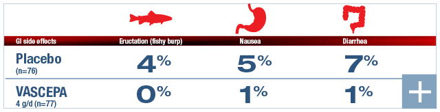
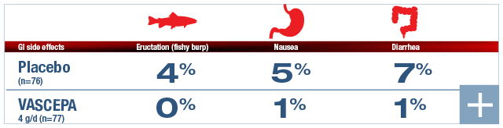

VASCEPA Provides Proven Tolerability and an Incidence of GI Side Effects Similar to Placebo1,2
, Nausea, Diarrhea: table showing VASCEPA incidence of GI side effects") 

- patients taking VASCEPA 4 g/d dropped out of the MARINE trial due to adverse events
- drug-drug interactions were observed in studies with:
— Warfarin, omeprazole, atorvastatin, or rosiglitazone - significant changes in fasting plasma glucose or hemoglobin A1c compared to the placebo group
- increase in LDL-C compared with placebo
ANCHOR TOLERABILITY PROFILE
Adverse Reactions Occurring at an Incidence >2% and Greater Than Placebo in Double-Blind, Placebo-Controlled Trials1,*
*Studies included patients from the MARINE and ANCHOR trials with TG values of 200 to 2000 mg/dL.
- An additional adverse reaction from clinical studies was oropharyngeal pain (<2%)
- Incidences of GI side effects were similar to placebo
- No significant changes were seen in fasting plasma glucose or hemoglobin A1C compared to the placebo group
- No significant effects were reported with regard to liver or kidney evaluation as evidenced by ALT, AST, and creatinine kinase
Myth/truth regarding fish oil supplements and GI side effects
MYTH: All fish oil–derived products result in "fishy burps" and potential stomach irritation or diarrhea.
TRUTH: In the MARINE trial, the safety and tolerability profile of VASCEPA was simiar to placebo. No patients taking VASCEPA 4 g/d reported "fishy burps," 1% experienced nausea, and 1% experienced diarrhea compared with 4%, 5%, and 7%, respectively, for placebo.2
ALT, alanine transaminase; AST, aspartate transaminase; GI, gastrointestinal; LDL-C, low-density lipoprotein cholesterol; MARINE, Multi-center plAcebo-controlled, Randomized, double-blINd, 12-week study with an open-label Extension; TG, triglyceride.